Getting started
Open Mehfil and you’re one click from a working, encrypted workspace — no account, no server, no install.
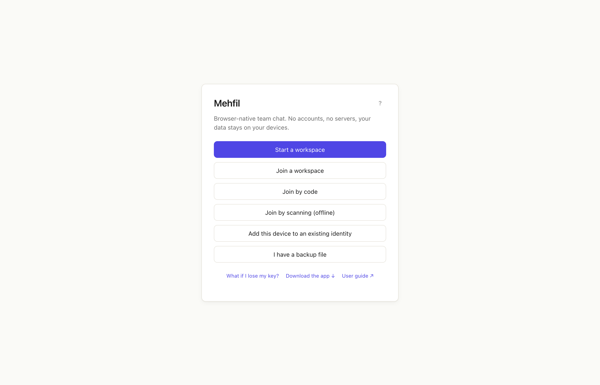
The landing screen
Every entry point in one place — start a workspace, join one, add a device, or restore a backup. No signup, no download.

How it works
The "?" explainer: no accounts, no servers, everything encrypted and stored only on members’ devices.
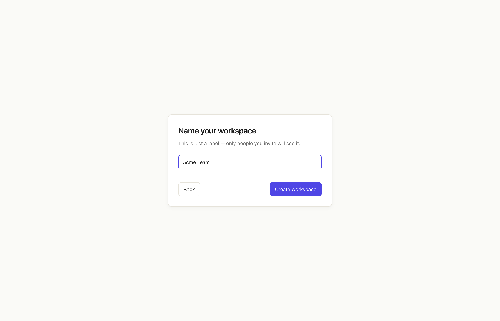
Create a workspace
Name it and go — a fresh identity and root keys are generated locally in the browser, instantly.
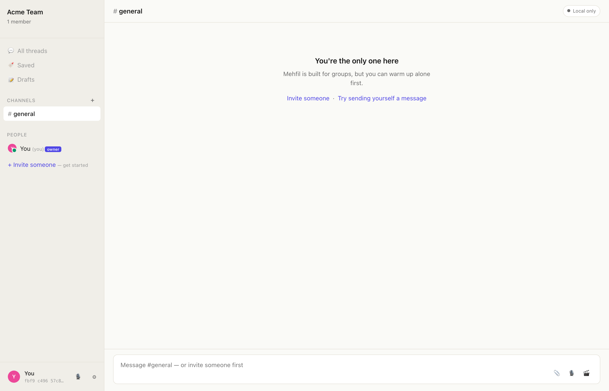
Your first workspace
The empty state after creating — #general is ready, with gentle prompts to invite someone or send yourself a message.
Connect your team — offline
Mehfil’s signature: get a group talking on one WiFi or a phone hotspot with no internet at all. Invite by link or QR; peers self-organize into a mesh that survives the host leaving.
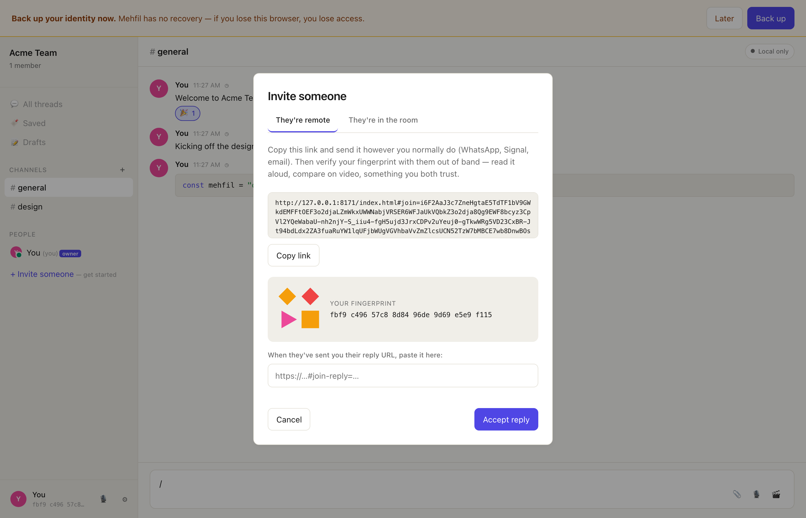
Invite someone
Share a link (or QR) and compare the visual fingerprint out-of-band. Works fully offline on a shared hotspot — no signaling server.
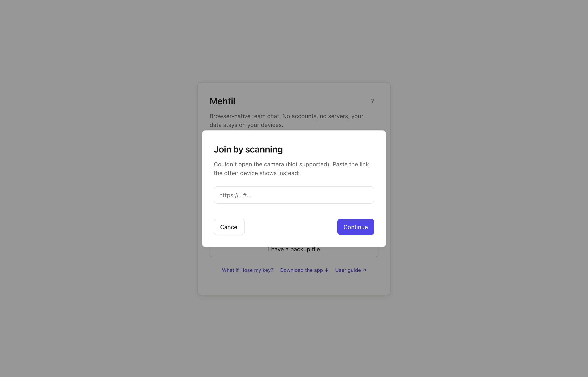
Join by scanning (offline)
The no-internet path: scan the inviter’s QR (or paste the link) to join a workspace on the same hotspot. One scan wires you into the mesh.
Messaging
Channels, threads, reactions, code, slash commands — the daily-driver surface.
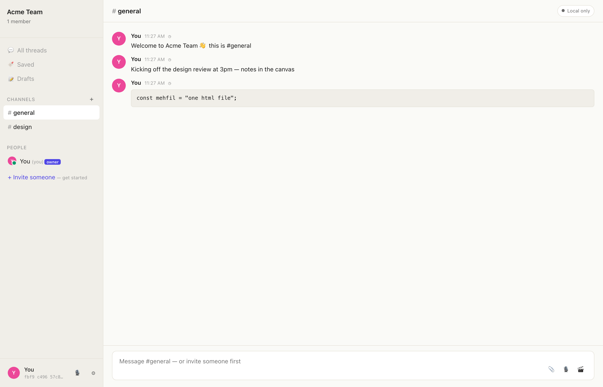
Channels & messages
The main surface — channels in the sidebar, threaded messages, code blocks, and a rich composer.
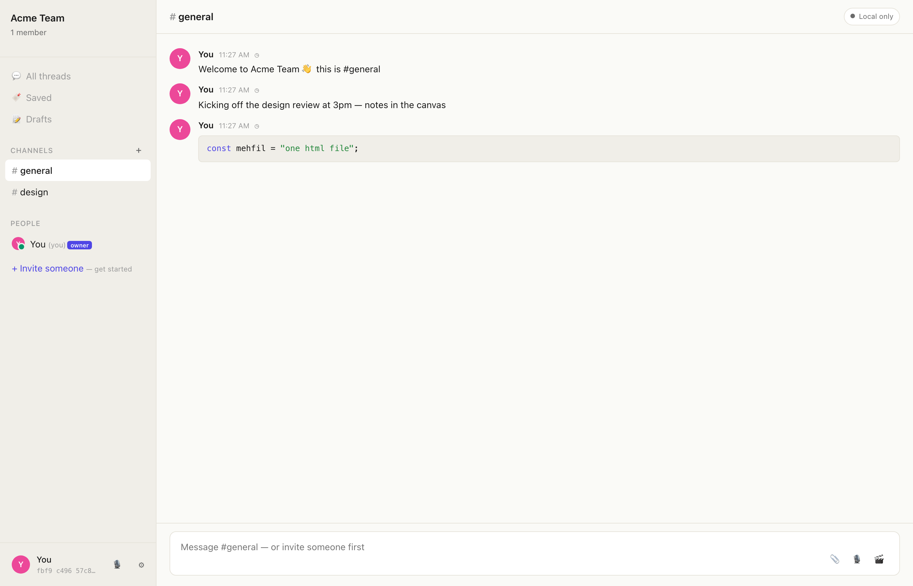
Reactions & message actions
React with any emoji; hover a message for reply, edit, pin, forward, and more.
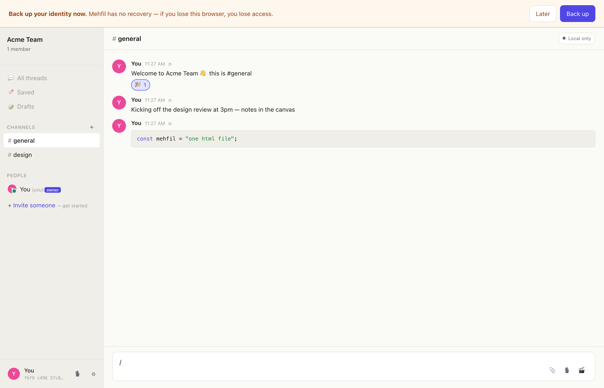
Slash commands
Type / for an autocomplete of workflow shortcuts — /dm, /goto, /poll, /remind, /call, /search, and more.
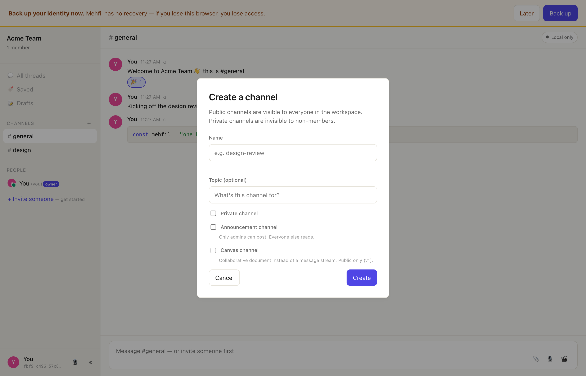
Create a channel
Public, private, announcement, or a collaborative Canvas doc — with a topic and optional member picker.
Find & navigate
Keyboard-first movement across everything you’ve got.
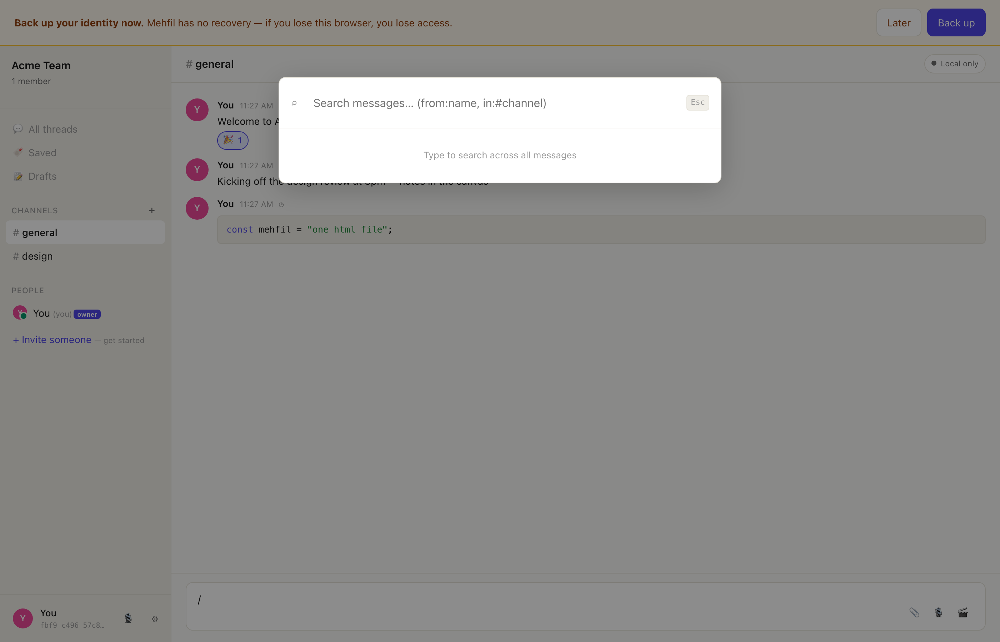
Search
Full-text search across messages, with from: and in:# filters. Local, instant, private.
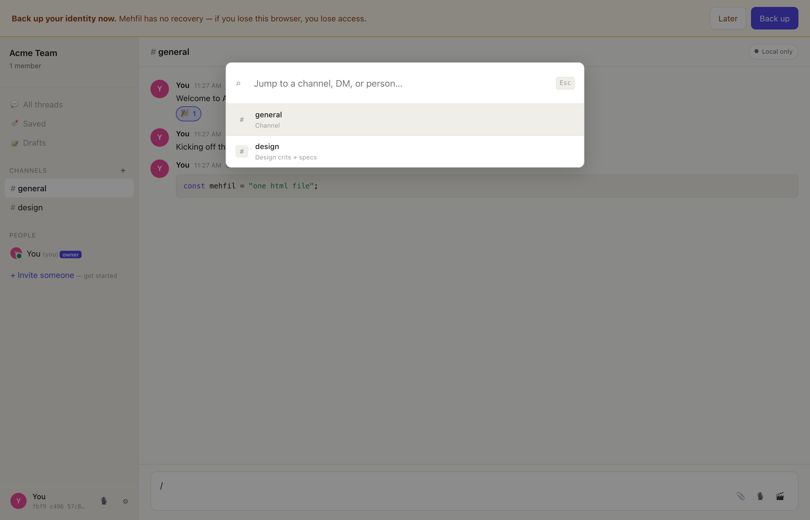
⌘K quick switcher
Jump to any channel, DM, or member — or fall through to message search — without leaving the keyboard.
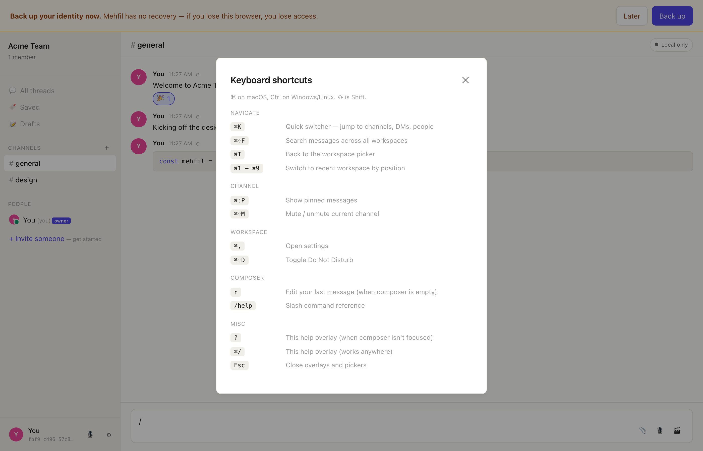
Keyboard shortcuts
The full keymap, grouped by Navigate / Channel / Workspace / Composer — a single source of truth generated from the app.
Settings & admin
Identity, devices, transports, and running a workspace.
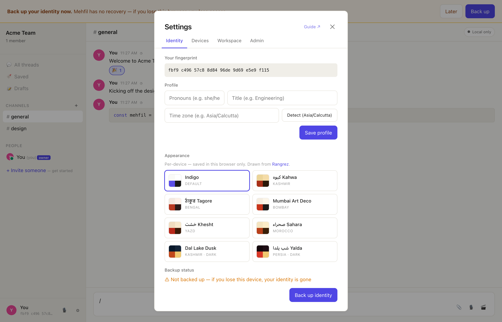
Settings · Identity
Your profile, custom status, and the backup that’s the only way to recover your identity.
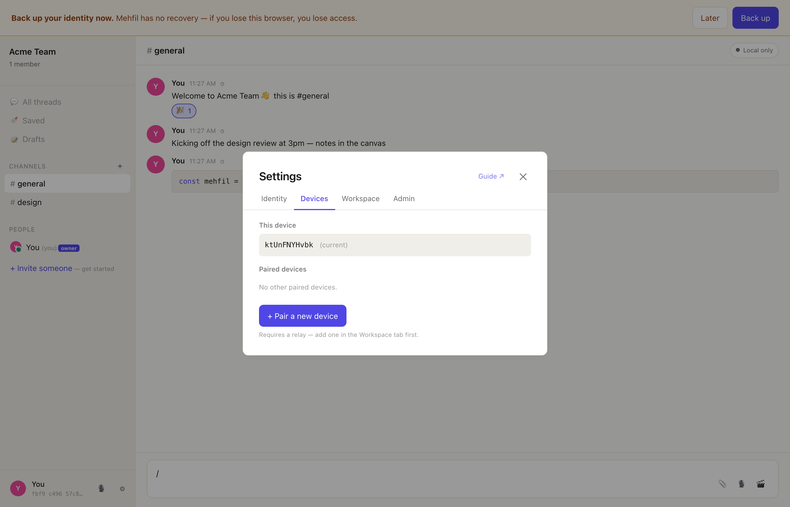
Settings · Devices
Pair additional devices to the same identity, and revoke ones you’ve lost.
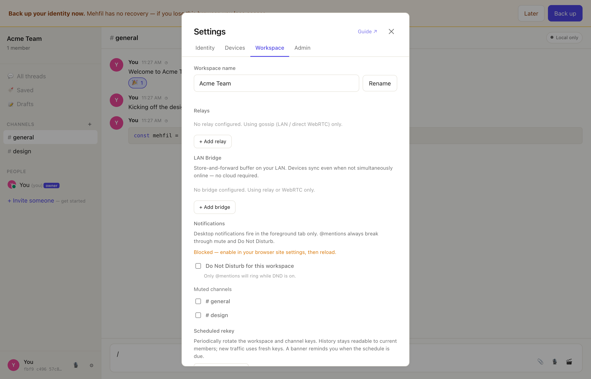
Settings · Workspace
Notifications and DND, relay/bridge transports for store-and-forward, and workspace-level options.
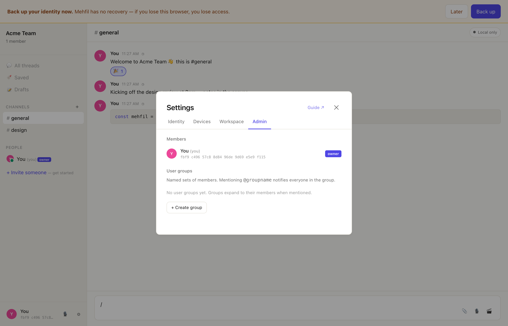
Settings · Admin
Member management, promote-by-consensus, and named user groups you can @mention.
No features match — try another word.